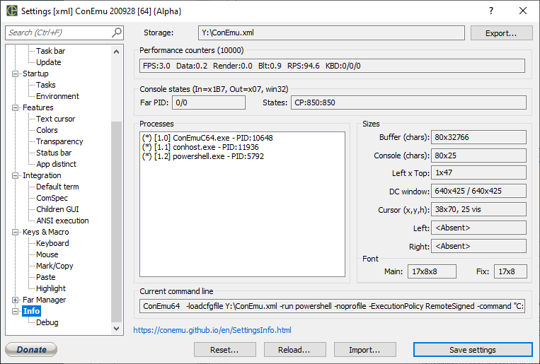

FPS: Frames per second Data: Average duration of transferring data from Real to Virtual console Render: Average duration of rendering text to memory DC Blt: Average duration of blit operation from memory DC to screen DC RPS: Average counts of reads real console data per second
Far PID Far PID and Far with plugin PID
States
Console (chars)
(pixels)
DC window
Cursor (x,y,h)
Left
Right
Main Real sizes of main font: Height x Width x AveWidth
Fix Real sizes of "Change pseudographics font": Height x Width